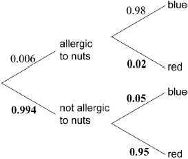

(M1)
Note: Award (M1) for their correct product.
(A1)(ft)(G2)
Note: Follow through from part (a).
[2 marks]
 (A1)(A1)(A1)
Note: Award (A1) for each correct pair of branches.
[3 marks]
(M1)
Note: Award (M1) for multiplying 0.006 by 0.98.
(A1)(G2)
[2 marks]
(A1)(ft)(M1)
Note: Award (A1)(ft) for their two correct products, (M1) for adding two products.
(A1)(ft)(G3)
Note: Follow through from parts (c) and (d).
[3 marks]
(M1)(M1)
Note: Award (M1) for their correct numerator, (M1) for their correct denominator.
(A1)(ft)(G3)
Note: Follow through from parts (d) and (e).
[3 marks]
(M1)
Note: Award (M1) for multiplying 38 by their answer to part (f).
(A1)(ft)(G2)
Notes: Follow through from part (f). Use of 3 sf result from part (f) results in an answer of 4.03 (4.028).
[2 marks]